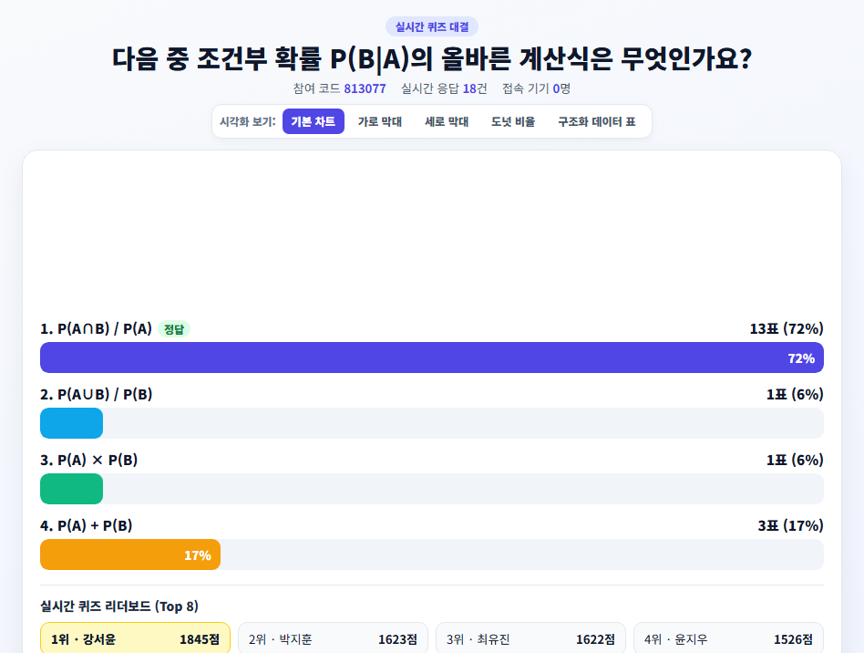

워드 클라우드
STEP 1 · 기본 수업 흐름
30초 만에 실시간 질문·투표 수업 시작하기
- 질문 슬라이드 만들기: 상단 [+ 질문 추가] 버튼으로 수업에 사용할 질문 슬라이드(워드클라우드, 객관식 투표, 척도, 순위, 100점 배분, 2×2 사분면, 퀴즈, Q&A)를 순서대로 구성합니다.
- QR 참여코드 화면 띄우기: 상단 [QR 참여코드] 또는 [전체화면 송출]을 눌러 교실 TV·빔프로젝터에 띄웁니다.
- 학생 스마트폰 1회 스캔: 학생들은 카메라로 QR 코드를 처음 1번만 스캔하면 됩니다. 별도 회원가입이나 앱 설치가 전혀 필요 없습니다.
- 질문 화면 실시간 송출 전환: 선생님이 상단 [◀ 이전 / 다음 ▶](또는 키보드 좌우 화살표
←→)로 질문을 넘기면 접속한 모든 학생 스마트폰 화면이 자동으로 다음 질문으로 즉시 전환됩니다. - 결과 가리기 후 공개: 투표 중 다른 학생의 응답에 휩쓸리지 않도록 [결과 숨김중]으로 가려 두었다가, 응답이 모이면 [결과 공개]를 눌러 그래프를 한 번에 보여줍니다.
STEP 2 · 활동 유형 위계
멘티미터 전체 8가지 활동 유형 상세 안내
1. 워드 클라우드 (키워드 빈도 시각화)학생 1인당 1~3개의 핵심 단어를 제출하면 많이 나온 단어일수록 중앙에 크게 표시됩니다. 하단 상위 키워드 칩을 클릭해 부적절한 단어를 즉시 제외할 수 있습니다.
2. 객관식 투표 (막대 · 도넛 · 표 전환)2~6개 선택지에 대해 실시간 득표수와 비율(%)을 집계합니다. 상단 [시각화 보기]에서 가로 막대, 세로 막대, 도넛 비율, 구조화 데이터 표로 즉시 바꿔 볼 수 있습니다.
3. 1~5 척도 평가 (평균 · 중앙값 · 표준편차)수업 이해도나 동의 정도를 1~5점으로 수집해 학급 평균 점수, 중앙값, 표준편차(의견 일치도), 점수별 인원 분포 막대를 자동으로 계산합니다.
4. 순위 매기기 (우선순위 Borda 가중 집계)학생들이 항목의 순위를 1위부터 N위까지 위아래(▲/▼)로 정렬해 제출하면, 순위별 가중 점수를 합산해 학급 전체의 종합 우선순위를 도출합니다.
5. 100점 배분 (비중 · 예산 나누기)학생이 총 100점을 여러 항목에 자유롭게 나누어 배분하면 항목별 평균 배분 점수와 비중(%)을 도넛 차트와 막대그래프로 보여줍니다.
6. 2×2 사분면 매트릭스 (X축 · Y축 산점도)가로축(예: 중요도)과 세로축(예: 시급성/난이도)을 각각 1~10점으로 평가받아 2차원 사분면 위에 개별 점과 빨간색 학급 평균 중심점을 찍어줍니다.
7. 실시간 퀴즈 대결 (자동 채점 · 속도 보너스 리더보드)선생님이 미리 정답 항목을 체크해 두면, 학생이 정답을 맞혔을 때 응답 속도에 따라 500~1000점이 부여되고 실시간 Top 리더보드 순위가 발표됩니다.
8. 자유 의견 · Q&A (실시간 카드 · 공감)학생들의 서술형 의견이나 질문을 카드 형태로 실시간 수집하며, 공감(♥) 횟수 집계 및 개별 카드 삭제가 가능합니다.
STEP 3 · 구글 시트 연동 및 엑셀 저장 안내
구글 시트(Google Sheets) 연동 및 데이터 활용 방법
- 별도 설정 없이도 즉시 수업 가능: T-ong 멘티미터 Pro는 기본적으로 무설정 실시간 P2P 방으로 즉시 동작하므로, 구글 시트를 연결하지 않아도 QR 코드만으로 바로 수업을 진행할 수 있습니다.
- 1클릭 구글 시트 · 엑셀(CSV) 호환 내보내기: 왼쪽 메뉴의 [현재 엑셀(CSV)] 또는 [전체 엑셀(CSV)] 버튼을 누르면 모든 질문의 구조화 집계표가 한글 깨짐 없는 표준 CSV로 다운로드되며, 이를 구글 드라이브 → Google 스프레드시트에서 바로 열어 학급 기록으로 영구 보관할 수 있습니다.
- T-ong 교무수첩 · 패들렛 마스터 시트와 함께 쓰기:
· 1단계 (사본 복사): T-ong 교무수첩 상단 [1 Google 시트 연동]에서 마스터 시트 사본을 내 구글 드라이브에 복사합니다.
· 2단계 (Apps Script 웹앱 배포): 시트 상단 메뉴 [확장 프로그램 → Apps Script]에서 [배포 → 새 배포 → 유형: 웹 앱 · 액세스 권한: 모든 사용자]로 배포해 생성된https://script.google.com/macros/s/.../exec주소를 복사합니다.
· 3단계 (연결 및 영구 동기화): 복사한 웹앱 URL을 T-ong 교무수첩과 T-ong 패들렛의 [연동 · 설정]에 붙여넣으면 모든 수업 기록이 선생님 본인의 구글 시트에 자동 저장됩니다.
STEP 4 · 동시 접속자 수 & 교사별 독립 사용
동시 접속자 수 권장 기준 및 전국 교사 개별 독립 사용 원리
- 모든 선생님이 100% 개별 독립 사용 가능: 전국 수백~수천 명의 선생님이 같은 주소(
tong-menti)에 동시에 접속해도 각 선생님의 브라우저에만 질문·응답이 저장되고, 선생님마다 고유한 6자리 방 코드가 개별 생성되므로 다른 학교·다른 반 데이터와 절대 섞이지 않습니다. - 1개 방 기준 권장 동시 접속 학생 수:
· 1 ~ 40명 (일반 학급 1개 반): 매우 쾌적 (초록 배지 · 0.1초 이내 즉시 반영)
· 41 ~ 60명 (2개 반 합반 · 소강당): 원활 (노랑 배지 · 자동 배치 렌더링으로 화면 끊김 방지)
· 60명 초과 (전교생 · 대강당 100명 이상): 교사 PC 1대의 브라우저 P2P 연결 한계로 지연이 생길 수 있으므로 반별·학년별로 방을 나누어 진행하는 것을 권장합니다. - 1인 1회 제한 (중복 투표 차단): 왼쪽 [1인 1회: ON]을 켜 두면 학생 스마트폰마다 고유 식별자가 부여되어 한 질문에 여러 번 중복 제출하는 것을 자동으로 막아줍니다.
STEP 5 · 교사용 다운로드 · 수업 백업
수업 전 질문 백업 & 수업 후 결과 보고서 다운로드
- 수업 백업(.json) 및 불러오기: 집이나 교무실 PC에서 미리 여러 개의 질문 슬라이드를 만든 뒤 [수업 백업(.json)]으로 저장해 두면, 교실 TV/전자칠판 PC에서 [백업 불러오기]로 1초 만에 질문 세트를 그대로 불러올 수 있습니다.
- 전체 엑셀(CSV) 통합 다운로드: 수업이 끝난 뒤 [전체 엑셀(CSV)]을 누르면 오늘 진행한 모든 질문 슬라이드의 항목·수치·비율(%)이 하나의 표로 깔끔하게 저장됩니다.
- A4 PDF 보고서 & 차트 PNG 저장: 상단 [PDF 보고서]를 누르면 전체 질문의 차트와 구조화 데이터 표가 A4 인쇄/PDF 저장용 보고서로 출력됩니다.
STEP 6 · 1단 전체화면 대형 스크린샷 안내
모의 학생 18명 응답 시뮬레이션 상세 화면 (1단 크게 보기)
작은 2단 분할 없이 실제 수업 화면을 1단 전체 너비로 크게 보여주는 상세 예시입니다. 왼쪽의 [모의 학생 18명 응답 체험] 버튼을 누르면 언제든 동일하게 테스트할 수 있습니다.
학생들이 제출한 핵심 단어가 빈도에 비례해 중앙에 크게 배치되며, 하단 상위 키워드 칩(×)을 눌러 부적절한 단어를 즉시 제외하고 하단 요약 바에서 총 제출 수·고유 키워드 수·1위 키워드·상위 3개 집중도를 바로 확인합니다.

선택지별 득표수와 비율(%)이 실시간 애니메이션 막대로 표시되며, 상단 [시각화 보기] 탭에서 세로 막대·도넛 비율·구조화 데이터 표로 즉시 전환할 수 있습니다.

학생들이 100점을 항목별로 나누어 배분한 결과를 도넛 비율 차트와 우측 한글 범례(평균 점수 및 비율)로 한눈에 비교합니다.

1점부터 5점까지의 응답 인원 분포를 세로 막대로 보여주고, 학급 전체 평균 점수·중앙값·표준편차(의견 분산도)를 하단에 자동 구조화합니다.

가로축(중요도)과 세로축(시급성) 1~10점 좌표를 사분면 위에 점으로 찍고, 학급 전체의 평균 중심점을 빨간색 원으로 강조해 우선순위를 직관적으로 파악합니다.

정답 항목에 초록색 [정답] 배지와 학급 정답률(%)을 표시하며, 정답을 빠르게 맞힌 학생 순으로 실시간 Top 리더보드 순위를 발표합니다.
